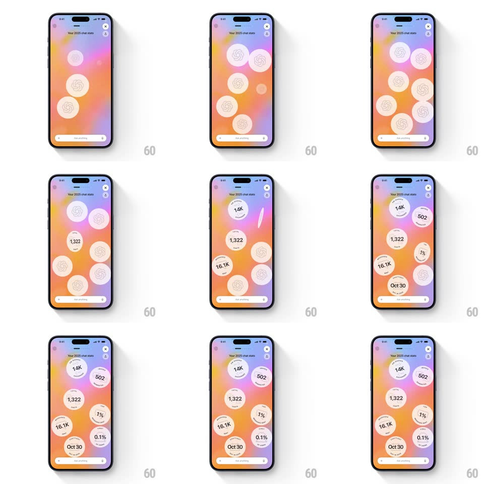

Media
Frame-by-frame

Rebuild this animation 1:1: ChatGPT's "Your 2025 chat stats" - coins bearing the ChatGPT spiral flip over one by one on an aurora gradient, revealing the year's numbers on their faces.

Rebuild this animation 1:1: ChatGPT's "Your 2025 chat stats" - coins bearing the ChatGPT spiral flip over one by one on an aurora gradient, revealing the year's numbers on their faces. ## Integration Integration: stack-agnostic spec - springs given as stiffness/damping, timed motions as duration + curve; map every value to your framework and animation library of choice. ## Scene A colorful aurora-gradient screen (orange, pink, violet) titled "your 2025 chat stats" with close and share buttons up top and the Ask Anything bar pinned at the bottom. Scattered over the gradient: circular white coins - backs showing the ChatGPT spiral, faces carrying stats: "14K messages", "502 chats", "1,322 chats", "16.1K words", "1% top users", "0.1%", "Oct 30 chattiest day". ## Motion spec Pattern: staggered 3D coin flips revealing year-in-review stats. - The coins enter as spiral-backs, scaling in from 0.8 with a soft spring (~320/16), staggered 80ms apart, drifting to their scattered positions. - After a 400ms beat, they flip one at a time around the vertical axis (rotateY 0 -> 180deg, 450ms each, ease-in-out with perspective ~900px), staggered ~150ms, each landing on its stat face. - Each coin settles with a tiny overshoot wobble (+/-5deg, 200ms) after its flip. - Flipped coins idle with a gentle float (+/-5px, offset phases, 3s loops) so the screen stays alive after the reveal. - The aurora background drifts slowly the whole time (20s loop) - the stats ride a living gradient. ## Calibration - The flip order is scattered, not row-wise - the eye should bounce around the screen. - Each stat face pairs a big number with a small rotated label along the coin's edge - the label curves with the coin, never straight text under the number alone. ## Reduced motion Coins fade in face-up (250ms, staggered) without the flip. ## Don't miss - "Oct 30" (chattiest day) sits among pure numbers - the date is a stat too, same coin treatment. - The Ask Anything bar stays live at the bottom - this is a chat surface, not a static recap card.